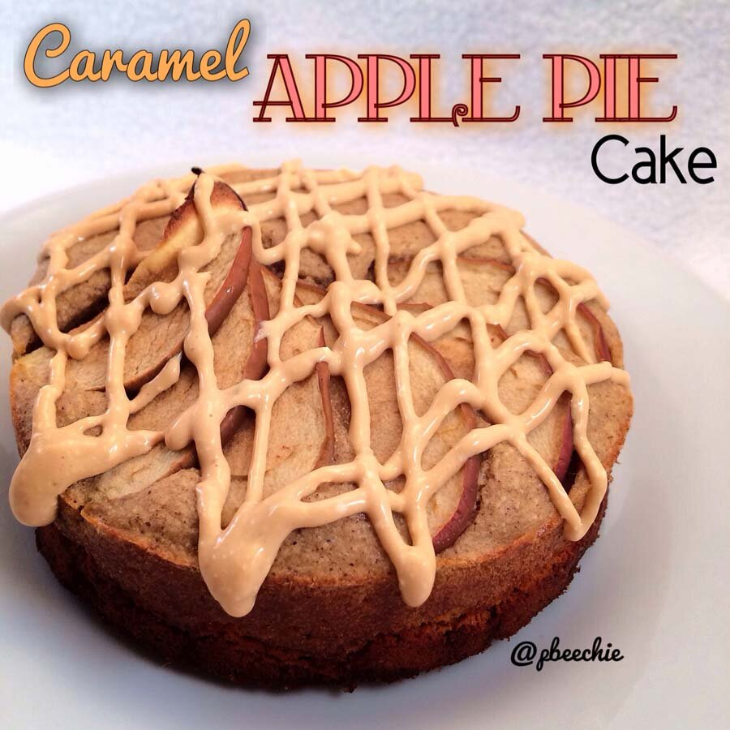

Caramel Apple Pie Cake
My apartment. Smells amazing. This cake turned out so soft and the spice is pooiiifect. I told you I'd be baking a ton this week! Don't know what's gotten into me :p But my boyfriend's not complaining, ha! Whenever I bake something, I split it with him to get a second opinion. And also so I'm not completely gorging myself on mass amounts of sweets XD He's always content eating my treats :)Also, this recipe was made possible by my new springform pan. My boyfriend bought it for me. Fun fact, whenever we get in an argument or he screws up somehow, he makes up for it by buying me some sort of kitchen appliance or peanut butter or kabocha squash. So this pan was obtained after his plans left me kabocha-less during the snow storm last week. Thank you snowpocalypse 2014? Something like that. 
- 1/3 cup raw old fashioned rolled oats
- 1 TBSP vanilla whey protein
- 1 TBSP coconut flour
- 1 whole egg
- 1 TBSP unsweetened applesauce
- 2 TBSP plain greek yogurt
- 1/2 tsp baking powder
- 1/2 tsp vanilla extract
- 1/4 tsp caramel extract
- 1/4 tsp apple pie spice
- 1 stevia packet
- 1 apple pie quest bar
- 1/2 apple, sliced
Caramel Icing
- 1/4 cup lowfat cottage cheese
- 1 TBSP zero calorie caramel-flavored walden farms syrup
- 7-8 liquid stevia drops
Preheat the oven to 350 F. Grind the oats into a flour. Then add the remaining ingredients except for the quest bar and the apple slices; blend again. Microwave the quest bar for 10 seconds to soften. Manipulate and flatten; press into a 4.5" mini springform pan that's been sprayed with a nonstick spray. Then pour your blended batter on top of the quest bar. Place thinly sliced apple slices on top of the batter as desired. Bake at 350 F for 16-19 minutes, or until the cake is firm. Let cool.
To make the icing, use a handblender to blend the three listed ingredients. Once the cake is cool, use it to ice the cake. Although it's perfectly fine without any icing!! Cut into 4 pieces. Enjoy!
Nutritional info for 1 slice with icing: 91 calories; 2 g fat, 14 g carbs (6 g fiber), and 8 g protein